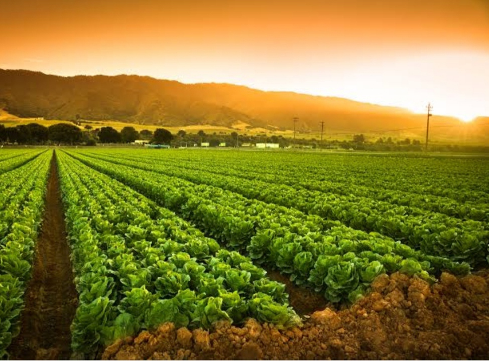
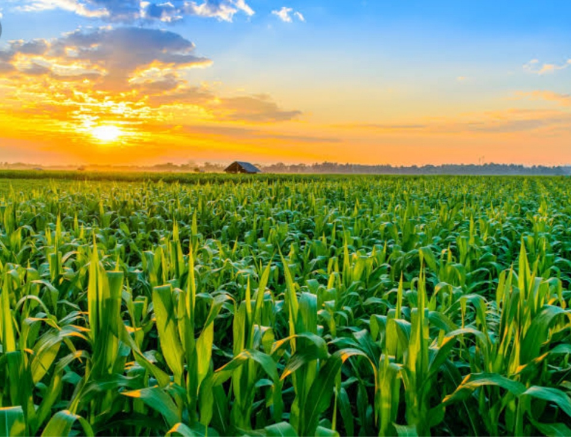
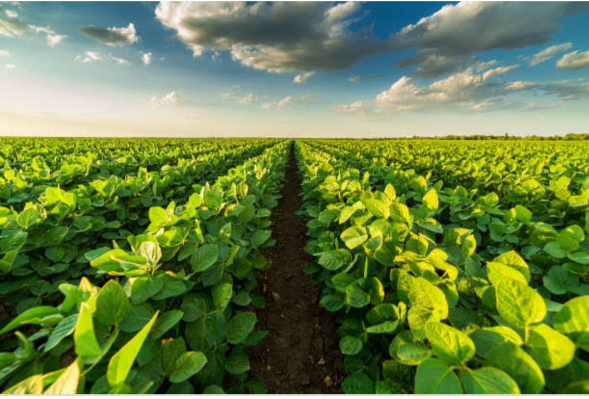
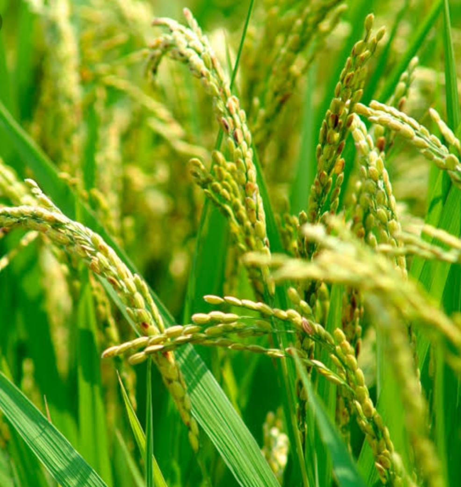

Irrigation is the artificial process of applying controlled amounts of water to land to assist in production of crops .Irrigation helps to grow agricultural crops, maintain landscapes, and revegetate disturbed soils in dry areas and during periods of less than average rainfall. Irrigation also has other uses in crop production, includingfrost protection , suppressing weed growth in grain fields and preventing soil condensation.    
Surface irrigation is where water is applied and distributed over the soil surface by gravity. It is by far the most common form of irrigation throughout the world and has been practiced in many areas virtually class unchanged for thousands ofyears.
Surface irrigation is often referred to as flood irrigation, implying that thewater distribution is uncontrolled and therefore, inherently inefficient. In reality, some of the irrigation practices grouped under this name involve a significant degree of management (for example:surge irrigation
). Surface irrigation comes in three major types;
Sprinkler Irrigation is a method of applying irrigation water which is similar to rainfall. Water is distributed through a system of pipes usually pumping. It is then sprayed into the air and irrigated entire soil surface through spray heads so that it breaks up into small water drops which fall to the ground.
Sprinklersprovide efficient coverage for small to large areas and are suitable for use on all types of properties. It is also adaptable to nearly allirrigable soils since sprinklers are available in a wide range of discharge capacity.
Drip irrigation is sometimes called trickle irrigation.
and involves dripping water onto the soil at very low rates (2-20 litres/hour) from a system of small diameter plastic pipes fitted with outlets called emitters or drippers. Water is applied close to plants so that only part of the soil in which the roots grow is wetted in the part of root.
Unlike surface and sprinkler irrigation, which involves wetting the whole soil profile. With drip irrigation water, applications are more frequent than with other methods and this provides a very favourable high moisture level in the soil in which plants can flourish.
center pivot irrigation system is a movable pipe structure that rotates around a central pivotconnected to a water supply. Center pivot irrigation systems are the most popular sprinkler irrigation systems,because of theirhigh efficiency, high uniformity, ability to irrigate uneven terrain, and low capital, maintenance, and management costs.
Center pivots are perhaps the most significant mechanical innovation in agriculture since the replacement of draft animals by the tractor. The systems move through the field by electrically powered tractor wheels. Sprinkler flow rates increase toward the outer end of the pivot because the end of the pivot travels fast.
Sub irrigation systems, also know as zero runoff , are an environmentally responsibly alternative that conserve water and fertilizers. They are being installed by greenhouse growers to improve product quality, achieve more uniform growth and increase production efficiency.
In sub irrigation systems, water and nutrient solution provided at thebase of the container rises by capillary action through holes in the bottom and is absorbed by the growing media. These systems are adaptable to crops grown in pots or flatsand uniform water is taken out.
Manual irrigation is by far the most common form of irrigation as anyone physically able to, can manually irrigate their crops.
It is you moving water from plant to plant. This is very labour andtime intensive and is usually done with a hose or bucket, so it is only suitable for smaller areas.
Manual Irrigation is also the most efficient as you have control over the water, and it is usually delivered in larger quantities that are good for the plant and can increase run-off from your farm.
However, this is financially the cheapest way to irrigate your farm and it is currently the only easily available option for many smallholders, especially in dry seasons.
Mist systems are an important part of any greenhouse operation, as they play a vital role in the production of both seed and vegetative plant material. Their fundamental purpose is to deliver an intermittent source of water in low volumes to plant material being vegetatively propagated or to seeds being germinated.
Mist systems, when compared to irrigation systems, typically deliver a smaller particle of water for shorter intervals of time. Depending on how a mist system is used and the type of crop its being used on, the crops production period can either be accelerated or slowed.